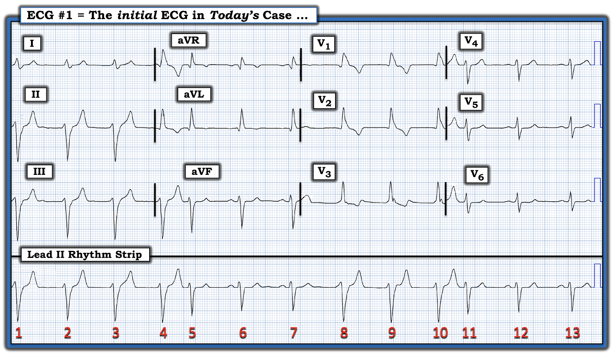
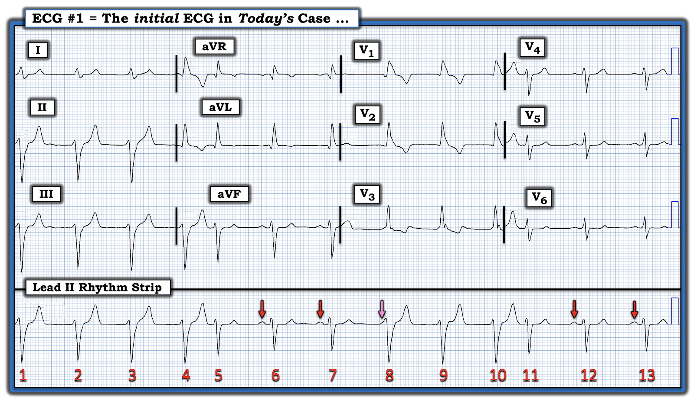
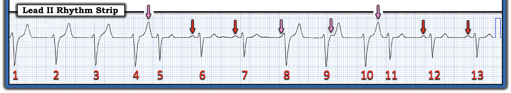
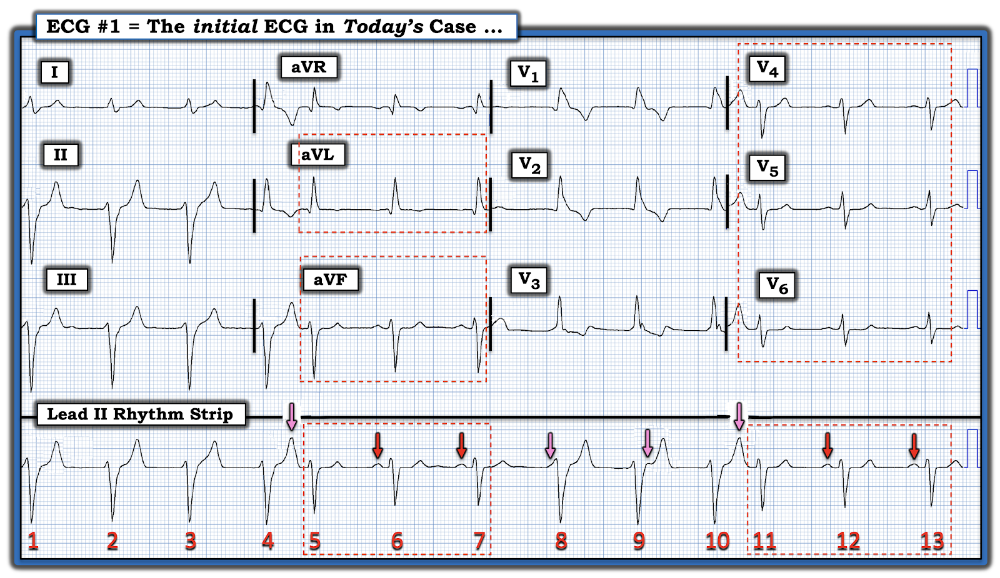
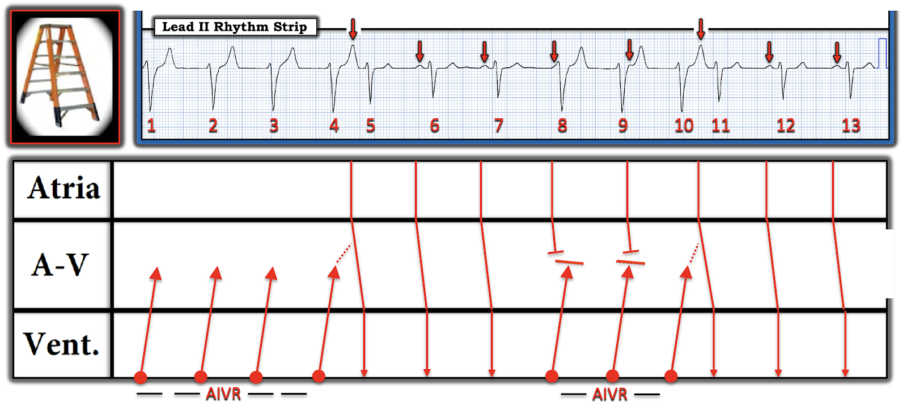

ECG Blog #373 — 86 tuổi và nhịp này ...
Điện tâm đồ 12 chuyển đạo và dải nhịp chuyển đạo II dài trong Hình 1 được ghi từ một người đàn ông 86 tuổi — đến khoa cấp cứu (ED — Emergency Department) vì tiền ngất. Không đau ngực. Bệnh nhân ổn định huyết động với nhịp này.
- BẠN sẽ đọc điện tâm đồ trong Hình 1 như thế nào?
- Đây là nhịp gì?


SUY NGHĨ CỦA TÔI về điện tâm đồ trong Hình 1:
Tần số chung của nhịp trong Hình 1 không nhanh. Biết rằng bệnh nhân này ổn định huyết động cho chúng ta chút thời gian để cân nhắc kỹ căn nguyên của nhịp trước khi chuyển sự chú ý sang các dấu hiệu trên điện tâm đồ 12 chuyển đạo.
- ĐIỂM THEN CHỐT #1: Khi bệnh nhân ổn định với một nhịp không quá nhanh — tôi thích bắt đầu bằng việc đánh giá dải nhịp chuyển đạo dài trước khi đi vào chi tiết các dấu hiệu trên điện tâm đồ 12 chuyển đạo. Như sẽ sớm thấy rõ — lý do là việc biết nhát nào là nhát thất hay nhát trên thất sẽ có ý nghĩa quyết định để đánh giá khả năng có thay đổi ST-T cấp.
Dải nhịp chuyển đạo II dài:
Như thường lệ — tôi ưu tiên cách tiếp cận hệ thống để đọc nhịp, dùng mẹo ghi nhớ Ps, Qs, 3R (Xem ECG Blog #185).
- Về độ rộng QRS — có 2 hình dạng QRS khác nhau trên dải nhịp chuyển đạo II dài trong Hình 1: i) Các nhát #1,2,3,4; và các nhát #8,9,10 rộng; và, ii) Các phức bộ QRS còn lại hẹp hơn.
- Sóng P có hiện diện trên bản ghi hôm nay! Trong Hình 2 — tôi đã đánh dấu bằng mũi tên ĐỎ những sóng P mà tôi có thể chắc chắn.
- Lưu ý rằng mỗi mũi tên trong 4 mũi tên ĐỎ ở Hình 2 — xuất hiện với khoảng PR hằng định (và bình thường) trước các nhát có phức bộ QRS hẹp với hình dạng tương tự nhau. Điều này cho biết có một nhịp xoang nền trên bản ghi hôm nay, ở đây với tần số tim ~70/phút (tức khoảng R-R giữa các nhát #5-6; 6-7; và giữa các nhát #11-12; và #12-13 — dài hơn 4 ô lớn một chút, tương ứng với tần số ~70/phút).
Có thêm sóng P nào không?
- Cách dễ nhất để tìm xem có thêm sóng P trong Hình 2 hay không — là dùng compa đo (calipers). Đặt compa đo bằng khoảng P-P xác định bởi 2 sóng P liên tiếp mà tôi chắc chắn (tức tôi đặt compa bằng khoảng P-P giữa nhát #6-7) — có thể thấy “bước dò kế tiếp” của compa với khoảng P-P này sẽ rơi đúng vào mũi tên HỒNG trong Hình 2.
- ĐIỂM THEN CHỐT #2: Nhận ra hoạt động nhĩ bổ sung là MẤU CHỐT để diễn giải nhịp hôm nay. Lưu ý rằng biến dạng nhỏ hình tam giác ở khởi đầu, dưới mũi tên HỒNG trong Hình 2 — rộng hơn sóng r nhỏ khởi đầu phía trước tất cả các nhát khác trên bản ghi này. Điều này xác nhận rằng sau 2 mũi tên ĐỎ đầu tiên trong Hình 2 — sóng P xoang đúng lúc kế tiếp nằm ngay dưới mũi tên HỒNG.
- ĐIỂM THEN CHỐT #3: Việc khoảng PR bắt đầu từ mũi tên HỒNG (và kéo dài đến QRS của nhát #8) quá ngắn để dẫn truyền — cho thấy ít nhất với nhát này, có phân ly nhĩ thất (vì sóng P mũi tên HỒNG này không liên quan (Related) với QRS kế bên). Khoảng PR rất ngắn này có nghĩa là "một điều gì khác" hẳn đã xảy ra trước khi sóng P HỒNG kịp dẫn truyền — điều này xác nhận rằng nhát #8 rộng và trông khác biệt phải là một nhát thất!
ĐIỂM THEN CHỐT #4: Nhát #8 là một PVC hay là một nhát “thoát” (escape)?
Điều quan trọng là làm rõ sự phân biệt giữa một "PVC" với một nhát "thoát". Theo định nghĩa — PVC là nhát “sớm" (Premature) (tức xuất hiện sớm hơn dự kiến). Ngược lại — một nhát "thoát" xuất hiện muộn hơn trong chu kỳ.
- Thay vì xuất hiện “sớm” — nhát #8 trong Hình 2 xuất hiện tương đối muộn trong chu kỳ. Vì vậy — nhát #8 được xếp loại đúng nhất là một nhát "thoát" thất.
- Vì các nhát #1 đến 4; và #9,10 đều có hình dạng QRS giống nhát #8 — nên tất cả đều là nhát thất. Và vì mỗi nhát thất này cách nhau một khoảng R-R tương tự (tức dài ~4 ô lớn) — các nhát này tạo thành 2 chuỗi ngắn AIVR (nhịp tự thất gia tốc — Accelerated IdioVentricular Rhythm) với tần số ~75/phút.
- LƯU Ý: Như đã bàn chi tiết trong ECG Blog #108 — "AIVR" là một nhịp lạc chỗ thất "tăng cường", có tần số nhanh hơn tần số thoát thất nội tại (thường trong khoảng 20-40/phút) — nhưng chậm hơn nhịp nhanh thất gây ảnh hưởng đáng kể lên huyết động (tức VT với tần số >130-140/phút).
Tổng hợp lại tất cả:
Xin nhấn mạnh — bạn chỉ nên mất không quá vài giây để hoàn tất các bước phân tích nhịp trên. Các bước này gợi ý mạnh mẽ những điều sau về nhịp trong Hình 2:
- Có một nhịp xoang nền với tần số ~70/phút.
- Nhịp xoang nền này bị gián đoạn bởi các chuỗi ngắn AIVR xuất hiện với tần số nhanh hơn một chút (tức ~75/phút).


Các câu hỏi còn lại về CA BỆNH hôm nay:
Vẫn còn một vài câu hỏi về điện tâm đồ của ca hôm nay:
- Có thêm sóng P "ẩn" nào không?
- Căn nguyên của nhát #5 và #11 trong Hình 2 là gì?
- Nhịp chung trong ca hôm nay có liên quan đến cơn tiền ngất đã khiến người đàn ông 86 tuổi này đến khoa cấp cứu không?
Còn nhát #5 và #11 thì sao?
Để rõ ràng — tôi chỉ trình bày dải nhịp chuyển đạo II dài trong Hình 3. Lưu ý rằng giờ tôi đã thêm 3 mũi tên HỒNG nữa (tức trên "bướu" nhỏ xuất hiện ngay sau QRS của nhát thất #9 — và tại đỉnh các sóng T đứng trước nhát #5 và 11).
- Chẳng phải hợp lý khi cho rằng mũi tên HỒNG tôi thêm ngay sau QRS của nhát #9 hẳn là một sóng P xoang đúng lúc khác sao?
- Và — chẳng phải các sóng T đứng trước nhát #5 và #11 trong Hình 3 cao hơn chỉ một chút xíu so với sóng T của các nhát thất khác trên bản ghi này sao?
- Vì vậy, chẳng phải hợp lý khi cho rằng các mũi tên HỒNG tôi thêm trước nhát #5 và #11 — nhiều khả năng là các sóng P xoang đúng lúc bổ sung, được dẫn truyền xuống thất (dù với khoảng PR hơi kéo dài) để tạo ra nhát #5 và #11 sao?


Ý nghĩa lâm sàng của AIVR trong ca này là gì?
Như đã bàn trong ECG Blog #108 — AIVR thường xảy ra trong một trong các bối cảnh lâm sàng sau: i) Là một nhịp trong lúc ngừng tim; ii) Trong giai đoạn theo dõi nhồi máu cơ tim cấp (đặc biệt là nhồi máu thành dưới); hoặc, iii) Là một rối loạn nhịp do tái tưới máu (tức sau tiêu sợi huyết, nong mạch vành cấp, hoặc tái tưới máu tự phát). AIVR cũng có thể gặp ở bệnh nhân có bệnh mạch vành nền, bệnh cơ tim, và/hoặc ngộ độc digoxin.
- Hiếm khi — AIVR có thể xuất hiện từng lúc ở người vốn khỏe mạnh, không có bệnh tim nền. Nếu những người này không có triệu chứng trong các cơn — thì không cần điều trị.
- Về CA BỆNH hôm nay: Bệnh nhân lớn tuổi (86 tuổi) — và đến viện sau một cơn tiền ngất. Bệnh nhân có thể mắc SSS (hội chứng suy nút xoang — Sick Sinus Syndrome) là nguyên nhân gây tiền ngất. Điều cần cân nhắc chính còn lại — là xem lại điện tâm đồ 12 chuyển đạo, và đánh giá xem có thiếu máu cục bộ hay nhồi máu mới xảy ra không.
- Đánh giá hình dạng QRST tốt nhất là nhìn vào các nhát dẫn truyền từ xoang — vì sóng Q và thay đổi ST-T thường khó đánh giá ở các nhát thất. Để thuận tiện cho việc đánh giá này, trong Hình 4 — tôi đã khoanh trong các hình chữ nhật chấm chấm ĐỎ những phức bộ QRST cần đánh giá ở các chuyển đạo khác nhau trên bản ghi 12 chuyển đạo, ứng với các nhát dẫn truyền từ xoang #5,6,7; và #11,12,13. Các phức bộ này gợi ý rằng có QRS rộng ra phần nào ở các nhát dẫn truyền từ xoang này (tức IVCD không đặc hiệu), kèm ST-T hơi dẹt không đặc hiệu — nhưng không có gì trông cấp tính.


========================================
Minh họa bằng GIẢN ĐỒ BẬC THANG:
Cơ chế của rối loạn nhịp hôm nay được làm rõ tốt nhất bằng minh họa giản đồ bậc thang (laddergram) (Hình 5).
- Như tôi vẫn thường nhấn mạnh — cần một chút thời gian để vẽ giản đồ bậc thang cho thạo (Xem ECG Blog #188). Ngược lại — học cách đọc giản đồ bậc thang thì không khó!
- Trong Hình 5 — các sóng P xoang đều đặn được thấy dẫn truyền ở Tầng Nhĩ, trừ 4 nhát đầu mà tôi không thấy bằng chứng hoạt động nhĩ.
- Các nhát rộng hơn trong Hình 5 không có sóng P đi trước là nhát thất. Trên giản đồ bậc thang — các nhát này khởi phát từ Tầng Thất — và dẫn truyền ở một mức độ nào đó vượt qua nút AV. Các nhát thất này tạo thành 2 chuỗi ngắn AIVR (tức nhát #1,2,3,4; và #8,9,10).
- Dẫn truyền ngược dòng từ các nhát thất #8 và 9 ngăn cản dẫn truyền xuôi của các sóng P xoang đúng lúc thấy ngay trước khởi đầu nhát #8 — và ngay sau QRS của nhát #9.
- Dẫn truyền ngược dòng từ các nhát thất #4 và #10 gây ra dẫn truyền "ẩn" — và làm chậm dẫn truyền xuôi của các sóng P xoang đúng lúc kế tiếp bị che khuất trong sóng T của nhát #4 và #10 (các đường ĐỎ chấm chấm trong Tầng Nút AV).
- Các nhát #6,7; và 12,13 — là các nhát xoang dẫn truyền bình thường.
- Có lẽ — chuỗi AIVR từ nhát #1 đến 4 đã ức chế nút SA phát xung trong khoảng thời gian này.


==================================
Lời cảm ơn: Xin cảm ơn một bác sĩ lâm sàng ẩn danh đã chia sẻ ca bệnh và các bản ghi này.
==================================
Các bài ECG Blog liên quan đến ca hôm nay:
- ECG Blog #185 — Điểm lại cách tiếp cận Ps, Qs & 3Rs để đọc nhịp một cách hệ thống.
- ECG Blog #210 — Điểm lại phương pháp Cách-Một-Nhát để ước tính tần số của các nhịp nhanh đều.
- ECG Blog #188 — Điểm lại những điều cốt yếu để đọc (và/hoặc vẽ) Giản đồ bậc thang, kèm ĐƯỜNG LINK tới rất nhiều giản đồ bậc thang tôi đã vẽ và bàn chi tiết trong các bài blog khác.
- ECG Blog #108 — Điểm lại khái niệm AIVR.
- Riera ARP, và cs.: AIVR: Chronology and Main Discoveries: Indian Pacing and EP Journal 10: 40-48, 2010.
- ECG Blog #68 — Điểm lại khái niệm dẫn truyền "ẩn".